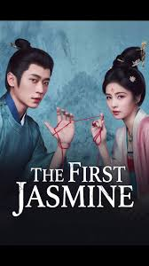

Historical • Romance • Political
Chinese Title: 莫离
English Title: The First Jasmine
Country: China 🇨🇳
Genre: Historical • Romance • Political
Episodes: 40
Status: Airing
Main Cast: Bai Lu, Cheng Lei
9.3 / 10
Based on early audience reactions and discussions among drama fans.
The First Jasmine follows Ye Li, a noblewoman who enters a political marriage while seeking justice for her family. Combining romance, revenge, court politics and historical storytelling, the drama has quickly become one of the most anticipated Chinese costume dramas of 2026.
Streaming platform information and international release details will be updated as official announcements are released.
▶ Tencent Video